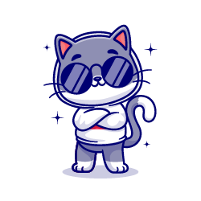

Cada gato es unico
Los gatos son una de las mascotas que más aceptación tienen entre las personas, junto con los perros. Estos felinos tienen una forma de ser muy diferente de la de los caninos, algo que les hace ser muy especiales, tanto por su actitud, como también por sus características.
Aqui te explicamos qué es un gato, su domesticación, ciclo de vida y comportamiento.
Ver mas acerca de los gatos